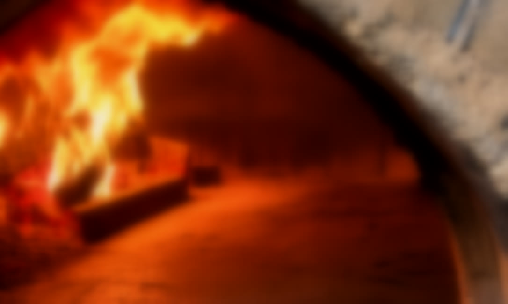
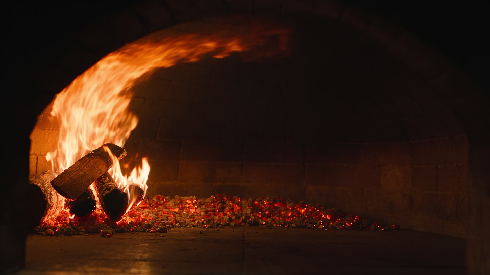
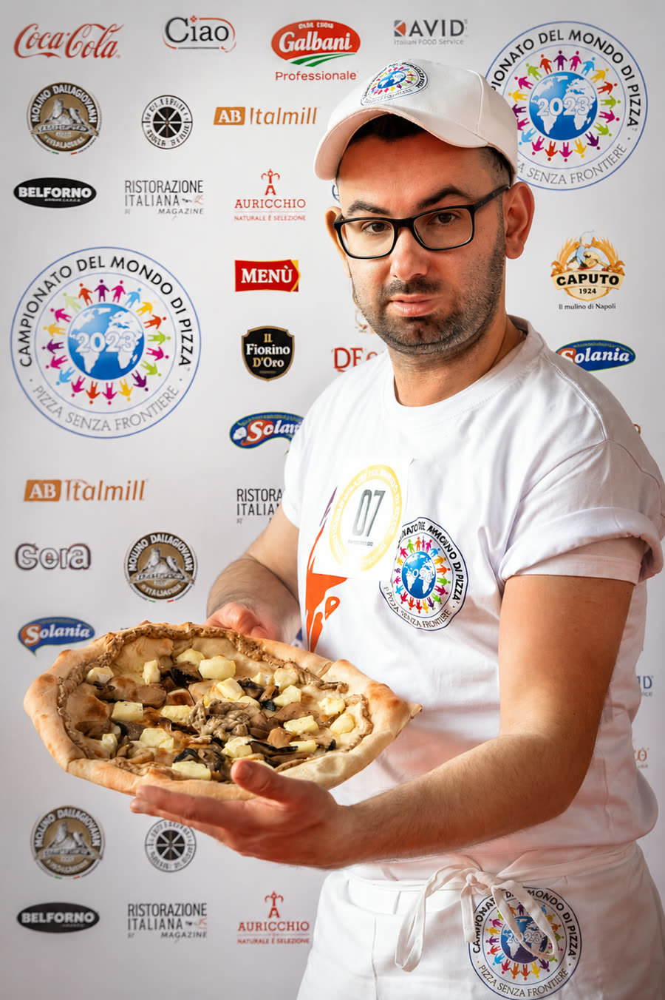
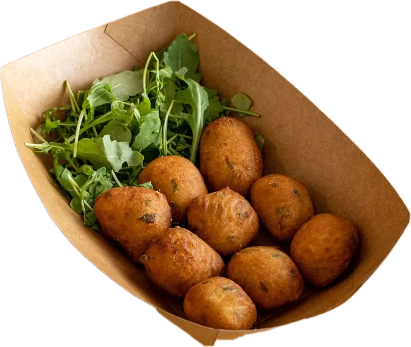

Vent'anni. E otto di gavetta.
Tutto è iniziato al Picchio Rosso di Spezzano, dove le cose buone si fanno notare in fretta. Partiti con due macchine per le consegne e l'ossessione per la pizza fatta a regola d'arte.

Nel 2014 Alessandro ha acceso il forno per la prima volta. Aveva vent'anni e già otto di gavetta alle spalle.
Tutto è iniziato al Picchio Rosso di Spezzano, dove le cose buone si fanno notare in fretta. Partiti con due macchine per le consegne e l'ossessione per la pizza fatta a regola d'arte.

Poi Fiorano, e il nostro forno a legna. Niente gas, niente compromessi: solo legna di faggio. Se una pizza non ci convince, si rifà da capo.

Oggi le auto sono più di dieci, e in ognuna il forno resta caldo fino alla tua porta. Consegne calde e puntuali, ogni sera.

Tre impasti studiati, ingredienti scelti con cura, più di cento pizze in carta. La promessa è sempre quella: se non è perfetta, dal nostro locale non esce.



Lievitato 24 ore. Il nostro impasto di sempre, leggero e digeribile, cotto nel forno a legna.
Più fibre e sali minerali. Tutto il carattere dell'integrale, non il solito ripiego.
Con farina macinata a pietra. Scegli tu quale: finiscono tutti nel forno a legna, uno per uno.
